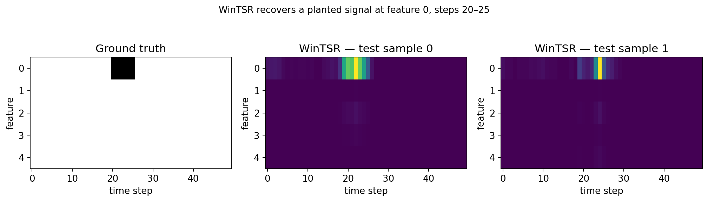

Interpretation methods¶
Choose an interpretation method based on the model interface, explanation you need, and
available compute. The toolkit covers local interpretation methods for time-series
models across perturbation, gradient, distributional, learned-mask, and surrogate
approaches. They follow the familiar .attribute(...) pattern from
Captum and
Time Interpret.

A synthetic series with a known answer — one feature, one window, everything else noise. WinTSR's saliency map (right two panels) lights up exactly where the ground truth (left) says it should. Reproduce this with the quickstart notebook.
At a glance¶
Following Captum's algorithm comparison matrix, here is what each method needs from your model and how it's computed:
Looking for which model architectures each of these has actually been run against? See Supported models.
Occlusion-based¶
WinTSR — Two-stage attribution. Stage one scores each time step by occluding it entirely (a time-relevance score). Stage two scores each feature within a time step, but only for the time steps that clear a relevance threshold from stage one, using a sliding window that respects the dependency between neighbouring steps. The two scores multiply to give the final attribution. Prior approaches either ignore the dependency between consecutive time steps, or score time and features independently and combine them after the fact; WinTSR does both jointly, and skips low-relevance time steps in stage two so it stays fast on long sequences.
End-to-end walkthrough: train DLinear on real ETTh1 data and derive a when-and-where forecasting insight.
Occlusion — Slides a window over the input, zeroing (or replacing) each region in turn and measuring the change in output. The base operation WinTSR's stage one builds on.
Feature Ablation — Occludes one feature (or a user-defined group of features) at a time across the whole sequence, rather than a sliding window.
Feature Permutation — Same idea as ablation, but shuffles a feature's values across the batch instead of zeroing it, so the replacement stays in-distribution.
Augmented Occlusion — Occlusion with a learned, data-driven baseline (sampled from a bootstrapped distribution) instead of a fixed zero or mean baseline.
Gradient-based¶
TSR — The method WinTSR generalizes. Also two-stage (time relevance, then feature relevance), but computes both stages with Integrated Gradients rather than occlusion, and does not account for temporal dependency between time steps within a stage. Needs a differentiable model — no black-box support.
Integrated Gradients — Accumulates gradients along a straight-line path from a baseline to the input, giving an attribution that satisfies completeness and sensitivity axioms.
Gradient SHAP — Approximates Shapley values by averaging Integrated-Gradients-style paths from multiple noisy baselines.
Delayed / distributional importance¶
WinIT — Computes delayed feature importance: how much a
feature's past values (within a sliding window) still influence the current
prediction, using a distributional distance (Jensen-Shannon or prediction-difference)
between the real and counterfactual forecast. Unlike WinTSR, it does not separate a
time-relevance and a feature-relevance stage. Its delay concept is built into the
progressive backward masking and distributional-distance score; the returned attribution
has shape (batch, n_output, seq_len, n_features), with no separate delay axis.
Walkthrough: compare WinIT and WinTSR on the same synthetic task.
FIT — Scores each observation by the KL-divergence between the predictive distribution with and without it. Classification only.
Learned masks¶
GateMask — The gating mechanism from ContraLSP: trains a
small network per input to produce sparse, binary-skewed gates over
(time, feature), using counterfactual perturbations and contrastive learning to keep
the masked input's distribution close to the original. Requires fitting a mask network
per batch (via a pytorch_lightning.Trainer), so it is
markedly slower than occlusion- or gradient-based methods.
Walkthrough: learn a GateMask and compare 10, 50, and 150 training epochs.
Dyna Mask — Learns a per-timestep mask with a smoothness/sparsity penalty, trained to preserve the model's prediction under the masked input.
Extremal Mask — Learns masks that push predictions towards a target extremum (rather than just preserving the original prediction), trained jointly with the perturbation applied under the mask.
Surrogate¶
Lime — Fits a local, interpretable surrogate model (typically linear) around the input to approximate the black-box model's behaviour in that neighbourhood.
Choosing a method¶
- Default: WinTSR. It's the method this package exists for, and the paper's results show it best recovers ground-truth relevance in both time and feature dimensions.
- Need a differentiable, gradient-only method: TSR, Integrated Gradients, or Gradient SHAP.
- Classification model, want instance-wise delayed importance: WinIT or FIT.
- Want a learned, sparse binary mask rather than a continuous score: GateMask, Dyna Mask, or Extremal Mask.
- Want a quick, model-agnostic baseline with no training step: Occlusion, Feature Ablation, Feature Permutation, or Augmented Occlusion.